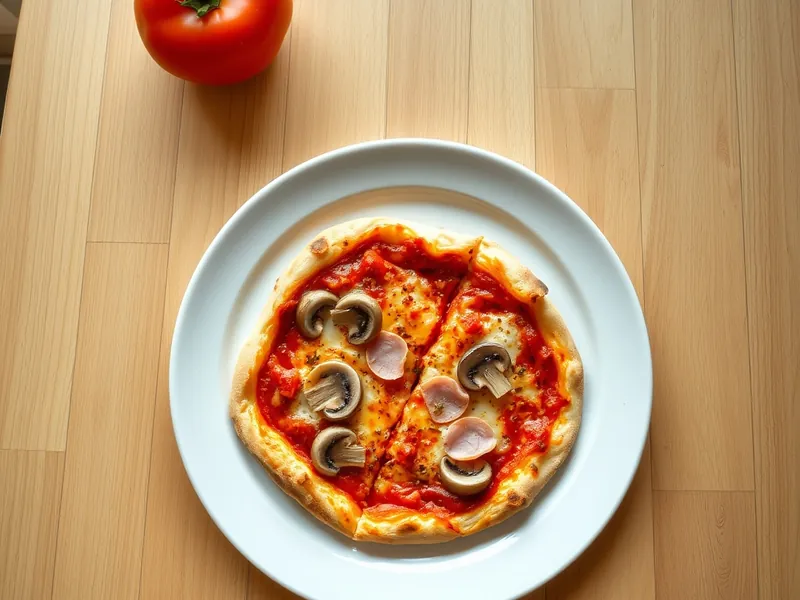

Пицца домашняя в духовке на дрожжевом тесте
Тонкая пицца на домашнем тесте с томатным соусом, ветчиной, грибами и моцареллой
120 мин6 порц.399 ккал на порциюБ 20 · Ж 19 · У 39Итальянская кухня
Открыть в приложении: порции, таймеры, список покупок
Продукты на 6 порц.
- Мука пшеничная300 г
- Вода180 мл
- Дрожжи сухие1 ч. л.
- Соль1 ч. л.
- Сахар2 щеп.
- Оливковое масло1,5 ст. л.
- Томаты в собственном соку0,5 шт
- Чеснок1 зуб.
- Сушёные травы1 ч. л.
- Моцарелла250 г
- Ветчина150 г
- Шампиньоны150 г
Как готовить
- Растворите дрожжи и сахар в тёплой воде, через 10 минут добавьте муку, 5 г соли и оливковое масло. Вымесите гладкое мягкое тесто 8 минут, накройте и оставьте в тепле на 60 минут.
- Для соуса пробейте томаты блендером с чесноком, травами и оставшейся солью.
- Разогрейте духовку до 200 °C (сильный жар) вместе с противнем, не меньше 20 минут. Нарежьте ветчину ломтиками, грибы - тонкими пластинками, моцареллу - кусочками.
- Разделите тесто на 2 части и растяните руками на листах бумаги в круги 30 см толщиной 3-4 мм.
- Смажьте основу соусом, оставляя бортик 1,5 см, разложите ветчину, грибы и моцареллу.
- Переложите пиццу вместе с бумагой на горячий противень и выпекайте 12-15 минут, пока бортик не зарумянится, а сыр не расплавится с коричневыми пятнами.
Совет. Обсушите моцареллу бумажным полотенцем перед выкладкой: лишняя вода размачивает тесто, и серединка остаётся сырой.